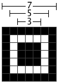
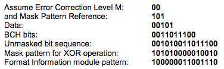
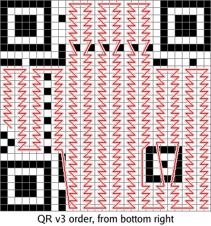
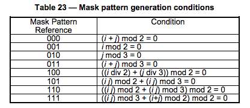
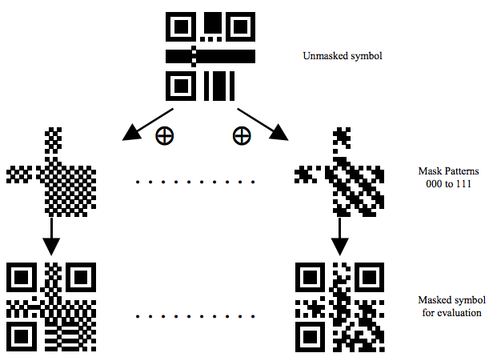

二维码的生成细节和原理
Abstract Keywords 二维码 二维码
Citation Yao Qing-sheng.二维码的生成细节和原理.FUTURE & CIVILIZATION Natural/Social Philosophy & Infomation Sciences,20240806. https://yaoqs.github.io/20240806/er-wei-ma-de-sheng-cheng-xi-jie-he-yuan-li/
转载自二维码的生成细节和原理
二维码又称QR Code，QR全称Quick Response，是一个近几年来移动设备上超流行的一种编码方式，它比传统的Bar Code条形码能存更多的信息，也能表示更多的数据类型：比如：字符，数字，日文，中文等等。这两天学习了一下二维码图片生成的相关细节，觉得这个玩意就是一个密码算法，在此写一这篇文章 ，揭露一下。供好学的人一同学习之。
关于QR Code Specification，可参看这个PDF：http://raidenii.net/files/datasheets/misc/qr_code.pdf
※基础知识
首先，我们先说一下二维码一共有40个尺寸。官方叫版本Version。Version 1是21 x 21的矩阵，Version 2是 25 x 25的矩阵，Version 3是29的尺寸，每增加一个version，就会增加4的尺寸，公式是：(V-1)*4 + 21（V是版本号） 最高Version 40，(40-1)*4+21 = 177，所以最高是177 x 177 的正方形。
下面我们看看一个二维码的样例：
※定位图案
Position Detection Pattern是定位图案，用于标记二维码的矩形大小。这三个定位图案有白边叫Separators for Postion Detection Patterns。之所以三个而不是四个意思就是三个就可以标识一个矩形了。
Timing Patterns也是用于定位的。原因是二维码有40种尺寸，尺寸过大了后需要有根标准线，不然扫描的时候可能会扫歪了。
Alignment Patterns 只有Version 2以上（包括Version2）的二维码需要这个东东，同样是为了定位用的。
※功能性数据
Format Information 存在于所有的尺寸中，用于存放一些格式化数据的。
Version Information 在 >= Version 7以上，需要预留两块3 x 6的区域存放一些版本信息。
※数据码和纠错码
- 除了上述的那些地方，剩下的地方存放 Data Code 数据码 和 Error Correction Code 纠错码。
※数据编码
我们先来说说数据编码。QR码支持如下的编码：
Numeric mode 数字编码，从0到9。如果需要编码的数字的个数不是3的倍数，那么，最后剩下的1或2位数会被转成4或7bits，则其它的每3位数字会被编成 10，12，14bits，编成多长还要看二维码的尺寸（下面有一个表Table 3说明了这点）
Alphanumeric mode 字符编码。包括 0-9，大写的A到Z（没有小写），以及符号$ % * + – . / : 包括空格。这些字符会映射成一个字符索引表。如下所示：（其中的SP是空格，Char是字符，Value是其索引值） 编码的过程是把字符两两分组，然后转成下表的45进制，然后转成11bits的二进制，如果最后有一个落单的，那就转成6bits的二进制。而编码模式和字符的个数需要根据不同的Version尺寸编成9, 11或13个二进制（如下表中Table 3）

Byte mode, 字节编码，可以是0-255的ISO-8859-1字符。有些二维码的扫描器可以自动检测是否是UTF-8的编码。
Kanji mode 这是日文编码，也是双字节编码。同样，也可以用于中文编码。日文和汉字的编码会减去一个值。如：在0X8140 to 0X9FFC中的字符会减去8140，在0XE040到0XEBBF中的字符要减去0XC140，然后把结果前两个16进制位拿出来乘以0XC0，然后再加上后两个16进制位，最后转成13bit的编码。如下图示例：

Extended Channel Interpretation (ECI) mode 主要用于特殊的字符集。并不是所有的扫描器都支持这种编码。
Structured Append mode 用于混合编码，也就是说，这个二维码中包含了多种编码格式。
FNC1 mode 这种编码方式主要是给一些特殊的工业或行业用的。比如GS1条形码之类的。
简单起见，后面三种不会在本文 中讨论。
下面两张表中，
Table 2 是各个编码格式的“编号”，这个东西要写在Format Information中。注：中文是1101
Table 3 表示了，不同版本（尺寸）的二维码，对于，数字，字符，字节和Kanji模式下，对于单个编码的2进制的位数。（在二维码的规格说明书中，有各种各样的编码规范表，后面还会提到）
下面我们看几个示例，
※示例一：数字编码
在Version 1的尺寸下，纠错级别为H的情况下，编码： 01234567
1. 把上述数字分成三组: 012 345 67
2. 把他们转成二进制: 012 转成 0000001100； 345 转成 0101011001； 67 转成 1000011。
3. 把这三个二进制串起来: 0000001100 0101011001 1000011
4. 把数字的个数转成二进制 (version 1-H是10 bits ): 8个数字的二进制是 0000001000
5. 把数字编码的标志0001和第4步的编码加到前面: 0001 0000001000 0000001100 0101011001 1000011
※示例二：字符编码
在Version 1的尺寸下，纠错级别为H的情况下，编码: AC-42
1. 从字符索引表中找到 AC-42 这五个字条的索引 (10,12,41,4,2)
2. 两两分组: (10,12) (41,4) (2)
3.把每一组转成11bits的二进制:
(10,12) 10*45+12 等于 462 转成 00111001110
(41,4) 41*45+4 等于 1849 转成 11100111001
(2) 等于 2 转成 000010
4. 把这些二进制连接起来：00111001110 11100111001 000010
5. 把字符的个数转成二进制 (Version 1-H为9 bits ): 5个字符，5转成 000000101
6. 在头上加上编码标识 0010 和第5步的个数编码: 0010 000000101 00111001110 11100111001 000010
※结束符和补齐符
假如我们有个HELLO WORLD的字符串要编码，根据上面的示例二，我们可以得到下面的编码，
| 编码 | 字符数 | HELLO WORLD的编码 |
|---|---|---|
| 0010 | 000001011 | 01100001011 01111000110 10001011100 10110111000 10011010100 001101 |
我们还要加上结束符：
| 编码 | 字符数 | HELLO WORLD的编码 | 结束 |
|---|---|---|---|
| 0010 | 000001011 | 01100001011 01111000110 10001011100 10110111000 10011010100 001101 | 0000 |
※按8bits重排
如果所有的编码加起来不是8个倍数我们还要在后面加上足够的0，比如上面一共有78个bits，所以，我们还要加上2个0，然后按8个bits分好组：
00100000 01011011 00001011 01111000 11010001 01110010 11011100 01001101 01000011 01000000
※补齐码（Padding Bytes）
最后，如果如果还没有达到我们最大的bits数的限制，我们还要加一些补齐码（Padding Bytes），Padding Bytes就是重复下面的两个bytes：11101100 00010001 （这两个二进制转成十进制是236和17，我也不知道为什么，只知道Spec上是这么写的）关于每一个Version的每一种纠错级别的最大Bits限制，可以参看QR Code Spec的第28页到32页的Table-7一表。
假设我们需要编码的是Version 1的Q纠错级，那么，其最大需要104个bits，而我们上面只有80个bits，所以，还需要补24个bits，也就是需要3个Padding Bytes，我们就添加三个，于是得到下面的编码：
00100000 01011011 00001011 01111000 11010001 01110010 11011100 01001101 01000011 01000000 11101100 00010001 11101100
上面的编码就是数据码了，叫Data Codewords，每一个8bits叫一个codeword，我们还要对这些数据码加上纠错信息。
※纠错码
上面我们说到了一些纠错级别，Error Correction Code Level，二维码中有四种级别的纠错，这就是为什么二维码有残缺还能扫出来，也就是为什么有人在二维码的中心位置加入图标。
| 错误修正容量 |
|---|
| L水平 |
| M水平 |
| Q水平 |
| H水平 |
那么，QR是怎么对数据码加上纠错码的？首先，我们需要对数据码进行分组，也就是分成不同的Block，然后对各个Block进行纠错编码，对于如何分组，我们可以查看QR Code Spec的第33页到44页的Table-13到Table-22的定义表。注意最后两列：
Number of Error Code Correction Blocks ：需要分多少个块。
Error Correction Code Per Blocks：每一个块中的code个数，所谓的code的个数，也就是有多少个8bits的字节。

举个例子：上述的Version 5 + Q纠错级：需要4个Blocks（2个Blocks为一组，共两组），头一组的两个Blocks中各15个bits数据 + 各 9个bits的纠错码（注：表中的codewords就是一个8bits的byte）（再注：最后一例中的（c, k, r ）的公式为：c = k + 2 * r，因为后脚注解释了：纠错码的容量小于纠错码的一半）
下图给一个5-Q的示例（因为二进制写起来会让表格太大，所以，我都用了十进制，我们可以看到每一块的纠错码有18个codewords，也就是18个8bits的二进制数）
| 组 | 块 | 数据 | 对每个块的纠错码 |
|---|---|---|---|
| 1 | 1 | 67 85 70 134 87 38 85 194 119 50 6 18 6 103 38 | 213 199 11 45 115 247 241 223 229 248 154 117 154 111 86 161 111 39 |
| 2 | 246 246 66 7 118 134 242 7 38 86 22 198 199 146 6 | 87 204 96 60 202 182 124 157 200 134 27 129 209 17 163 163 120 133 | |
| 2 | 1 | 182 230 247 119 50 7 118 134 87 38 82 6 134 151 50 7 | 148 116 177 212 76 133 75 242 238 76 195 230 189 10 108 240 192 141 |
| 2 | 70 247 118 86 194 6 151 50 16 236 17 236 17 236 17 236 | 235 159 5 173 24 147 59 33 106 40 255 172 82 2 131 32 178 236 |
注：二维码的纠错码主要是通过Reed-Solomon error correction（里德-所罗门纠错算法）来实现的。对于这个算法，对于我来说是相当的复杂，里面有很多的数学计算，比如：多项式除法，把1-255的数映射成2的n次方（0<=n<=255）的伽罗瓦域Galois Field之类的神一样的东西，以及基于这些基础的纠错数学公式，因为我的数据基础差，对于我来说太过复杂，所以我一时半会儿还有点没搞明白，还在学习中，所以，我在这里就不展开说这些东西了。还请大家见谅了。（当然，如果有朋友很明白，也繁请教教我）
※最终编码
※穿插放置
如果你以为我们可以开始画图，你就错了。二维码的混乱技术还没有玩完，它还要把数据码和纠错码的各个codewords交替放在一起。如何交替呢，规则如下：
对于数据码：把每个块的第一个codewords先拿出来按顺度排列好，然后再取第一块的第二个，如此类推。如：上述示例中的Data Codewords如下：
| 块 1 | 67 | 85 | 70 | 134 | 87 | 38 | 85 | 194 | 119 | 50 | 6 | 18 | 6 | 103 | 38 | |
| 块 2 | 246 | 246 | 66 | 7 | 118 | 134 | 242 | 7 | 38 | 86 | 22 | 198 | 199 | 146 | 6 | |
| 块 3 | 182 | 230 | 247 | 119 | 50 | 7 | 118 | 134 | 87 | 38 | 82 | 6 | 134 | 151 | 50 | 7 |
| 块 4 | 70 | 247 | 118 | 86 | 194 | 6 | 151 | 50 | 16 | 236 | 17 | 236 | 17 | 236 | 17 | 236 |
我们先取第一列的：67， 246， 182， 70
然后再取第二列的：67， 246， 182， 70， 85，246，230 ，247
如此类推：67， 246， 182， 70， 85，246，230 ，247 ……… ……… ，38，6，50，17，7，236
对于纠错码，也是一样：
| 块 1 | 213 | 199 | 11 | 45 | 115 | 247 | 241 | 223 | 229 | 248 | 154 | 117 | 154 | 111 | 86 | 161 | 111 | 39 |
| 块 2 | 87 | 204 | 96 | 60 | 202 | 182 | 124 | 157 | 200 | 134 | 27 | 129 | 209 | 17 | 163 | 163 | 120 | 133 |
| 块 3 | 148 | 116 | 177 | 212 | 76 | 133 | 75 | 242 | 238 | 76 | 195 | 230 | 189 | 10 | 108 | 240 | 192 | 141 |
| 块 4 | 235 | 159 | 5 | 173 | 24 | 147 | 59 | 33 | 106 | 40 | 255 | 172 | 82 | 2 | 131 | 32 | 178 | 236 |
和数据码取的一样，得到：213，87，148，235，199，204，116，159，…… …… 39，133，141，236
然后，再把这两组放在一起（纠错码放在数据码之后）得到：
67, 246, 182, 70, 85, 246, 230, 247, 70, 66, 247, 118, 134, 7, 119, 86, 87, 118, 50, 194, 38, 134, 7, 6, 85, 242, 118, 151, 194, 7, 134, 50, 119, 38, 87, 16, 50, 86, 38, 236, 6, 22, 82, 17, 18, 198, 6, 236, 6, 199, 134, 17, 103, 146, 151, 236, 38, 6, 50, 17, 7, 236, 213, 87, 148, 235, 199, 204, 116, 159, 11, 96, 177, 5, 45, 60, 212, 173, 115, 202, 76, 24, 247, 182, 133, 147, 241, 124, 75, 59, 223, 157, 242, 33, 229, 200, 238, 106, 248, 134, 76, 40, 154, 27, 195, 255, 117, 129, 230, 172, 154, 209, 189, 82, 111, 17, 10, 2, 86, 163, 108, 131, 161, 163, 240, 32, 111, 120, 192, 178, 39, 133, 141, 236
这就是我们的数据区。
※Remainder Bits
最后再加上Reminder Bits，对于某些Version的QR，上面的还不够长度，还要加上Remainder Bits，比如：上述的5Q版的二维码，还要加上7个bits，Remainder Bits加零就好了。关于哪些Version需要多少个Remainder bit，可以参看QR Code Spec的第15页的Table-1的定义表。
※画二维码图
※Position Detection Pattern
首先，先把Position Detection图案画在三个角上。（无论Version如何，这个图案的尺寸就是这么大）

※Alignment Pattern
然后，再把Alignment图案画上（无论Version如何，这个图案的尺寸就是这么大）

关于Alignment的位置，可以查看QR Code Spec的第81页的Table-E.1的定义表（下表是不完全表格）

下图是根据上述表格中的Version8的一个例子（6，24，42）

※Timing Pattern
接下来是Timing Pattern的线（这个不用多说了）

※Format Information
再接下来是Formation Information，下图中的蓝色部分。

Format Information是一个15个bits的信息，每一个bit的位置如下图所示：（注意图中的Dark Module，那是永远出现的）

这15个bits中包括：
- 5个数据bits：其中，2个bits用于表示使用什么样的Error Correction Level， 3个bits表示使用什么样的Mask
- 10个纠错bits。主要通过BCH Code来计算
然后15个bits还要与101010000010010做XOR操作。这样就保证不会因为我们选用了00的纠错级别和000的Mask，从而造成全部为白色，这会增加我们的扫描器的图像识别的困难。
下面是一个示例：

关于Error Correction Level如下表所示：

关于Mask图案如后面的Table 23所示。
※Version Information
再接下来是Version Information（版本7以后需要这个编码），下图中的蓝色部分。
Version Information一共是18个bits，其中包括6个bits的版本号以及12个bits的纠错码，下面是一个示例：
而其填充位置如下：

※数据和数据纠错码
然后是填接我们的最终编码，最终编码的填充方式如下：从左下角开始沿着红线填我们的各个bits，1是黑色，0是白色。如果遇到了上面的非数据区，则绕开或跳过。

※掩码图案
这样下来，我们的图就填好了，但是，也许那些点并不均衡，如果出现大面积的空白或黑块，会告诉我们扫描识别的困难。所以，我们还要做Masking操作（靠，还嫌不复杂）QR的Spec中说了，QR有8个Mask你可以使用，如下所示：其中，各个mask的公式在各个图下面。所谓mask，说白了，就是和上面生成的图做XOR操作。Mask只会和数据区进行XOR，不会影响功能区。（注：选择一个合适的Mask也是有算法的）
其Mask的标识码如下所示：（其中的i,j分别对应于上图的x,y）

下面是Mask后的一些样子，我们可以看到被某些Mask XOR了的数据变得比较零散了。

Mask过后的二维码就成最终的图了。
好了，大家可以去尝试去写一下QR的编码程序，当然，你可以用网上找个Reed Soloman的纠错算法的库，或是看看别人的源代码是怎么实现这个繁锁的编码。
（全文完）
Address:Department of Natural/Social Philosophy & Infomation Sciences, CHINA
Biography...
转载或引用本文时请遵守许可协议，注明出处、不得用于商业用途！
Like this article? Support the author with